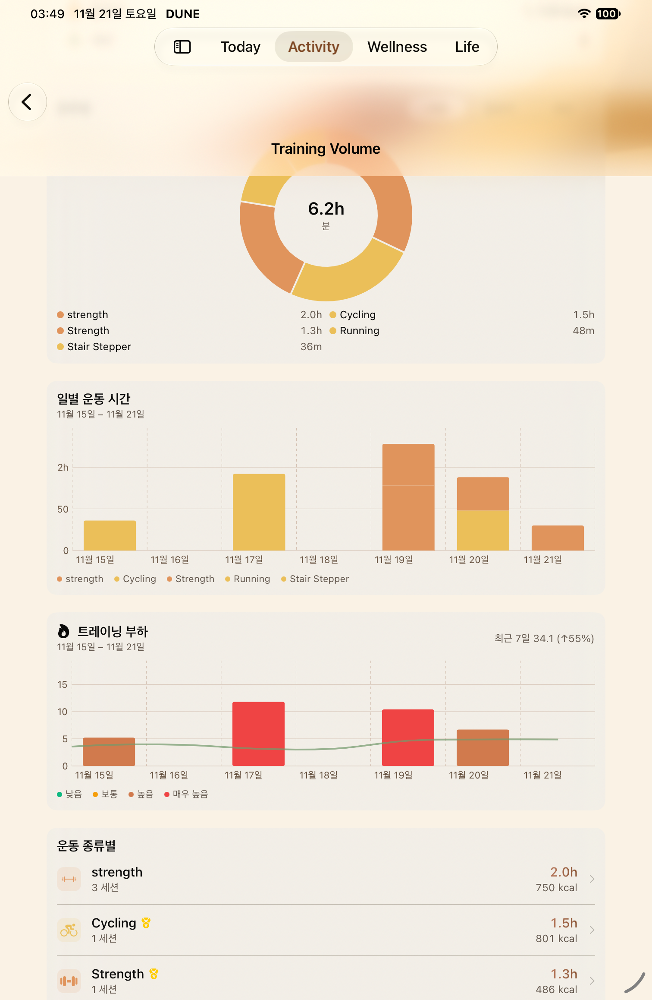
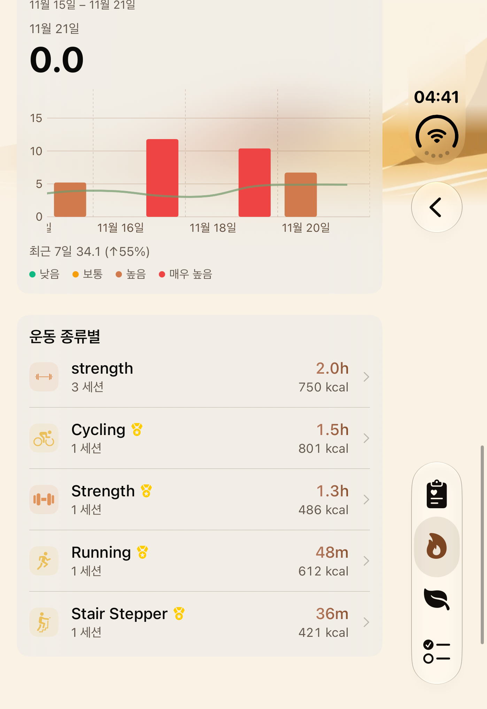
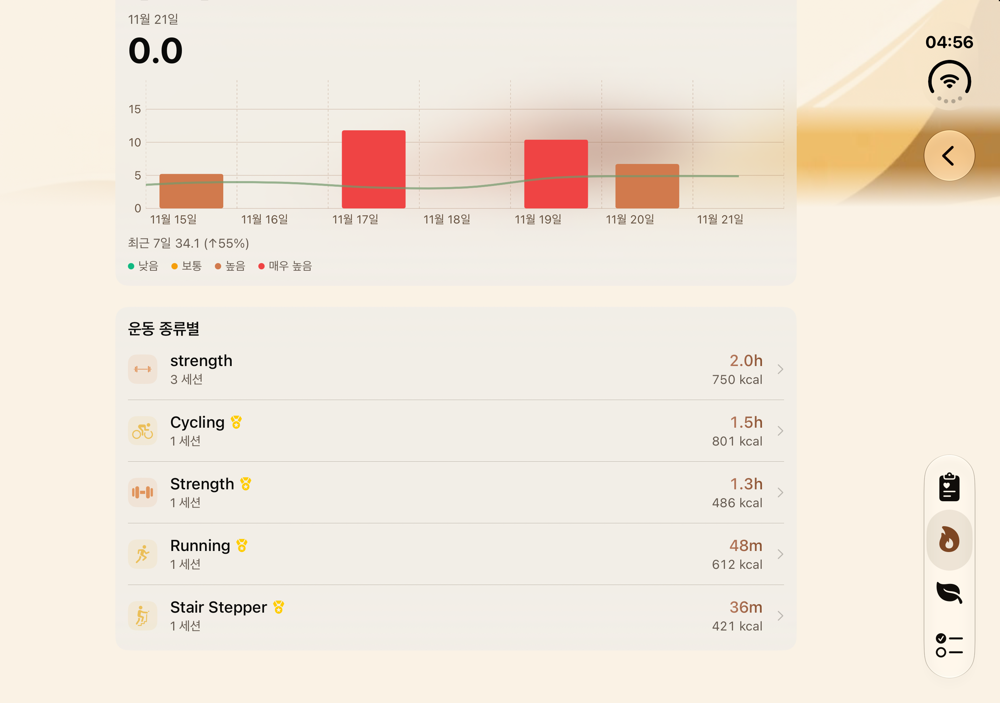

전체 디자인맵
R07 · A06 훈련 부하 기간 비교
iPhone 18 Pro · iOS 27.2 · 한국어 · 밝음 · 2026-11-21. 코드 8a0d632d7, 기준 main 9d2f82398.

제공된 ChartInteractionRegressionUITests/testTrainingLoadChartShowsRollingSevenDaySummaryAndCapturesA06() 통과 첨부 원본. 화면에서 최근 7일 요약과 훈련 부하 차트 카드 일부를 확인할 수 있다. 차트 하단은 탭 바에 가깝고 다른 상태까지 검증하지 않는다.
기기·코드·해시·검증 범위 · XCTest 첨부 출처
기기별 새 캡처가 모두 첨부됨.
기존 각 기기의 A06 이미지는 이번 R07 구현의 증거가 아니다.
추가 기기 실제 첨부
기능별 원격 소스와 최종 통합본을 파일 단위로 대조했다. 각 이미지를 통과한 개별 UI 테스트에 연결했다. Duo 내부 화면은 지정된 체크포인트에서 활성 LCD-1 프레임버퍼를 직접 캡처했다. 파일별 빌드·크기·관찰 결과는 아래 기록에 있다. 육안 검토: 원본 화면 검토 완료; 7일 막대·기준선과 최근 7일 34.1(+55%) 합계가 같은 카드에 보이고 선택된 기간의 양 끝이 화면에 들어온다. 훈련 부하 카드에는 간격을 둔 11월 16·18·20일 눈금과 최근 7일 34.1(+55%)가 함께 보이며 이웃한 날짜 문자열이 겹치지 않는다. Duo 내부 가로 화면에서 7일 막대와 기준선, 합계와 증감률이 우측 도크와 떨어져 보인다. 활성 내부 패널 원본을 검사했다.; 기능별 캡처 검토.

ipad · A06-training-load-seven-days · 1512×2316
7일 막대·기준선과 최근 7일 34.1(+55%) 합계가 같은 카드에 보이고 선택된 기간의 양 끝이 화면에 들어온다.

duo · A06-training-load-seven-days · 1398×2034
훈련 부하 카드에는 간격을 둔 11월 16·18·20일 눈금과 최근 7일 34.1(+55%)가 함께 보이며 이웃한 날짜 문자열이 겹치지 않는다.

duo-open · A06-training-load-seven-days · 2853×2007
Duo 내부 가로 화면에서 7일 막대와 기준선, 합계와 증감률이 우측 도크와 떨어져 보인다. 활성 내부 패널 원본을 검사했다.추가 출처·해시